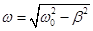

![[GPL v3]](images/gplv3-88x31.png)
В программе моделируются свободные затухающие колебания пружинного маятника.
Существует возможность изменять следующие параметры модели:
Для удобства проведения эксперимента добавлены секундомер и возможность изменения скорости опыта, а так же линейка для измерения смещения груза от положения равновесия.
В программе могут быть выведены графики следующих зависимостей:
| Компилятор / Qt | ОС | Ссылка |
|---|---|---|
| MinGW 3.4.2, Qt 4.4.3 | Windows 98 SE и выше | pendulum_qt4.4_mingw32.zip |
| MSVC 2017 x86, Qt 5.6.3 | Windows XP SP3 и выше | pendulum_qt5.6_msvc2017_x86.zip |
| MSVC 2017 x64, Qt 5.6.3 | Windows XP x64 SP2 и выше | pendulum_qt5.6_msvc2017_x64.zip |
| MSVC 2022 x86, Qt 5.15.2 | Windows 7 x86 и выше | pendulum_qt5.15_msvc2022_x86.zip |
| MSVC 2022 x64, Qt 5.15.2 | Windows 7 x64 и выше | pendulum_qt5.15_msvc2022_x64.zip |
| GCC 4.8.5 i486, Qt 5.6.3 | GNU/Linux i486 | pendulum_qt5.6_i486-linux-gnu.elf.gz |
| GCC 4.8.5 x86_64, Qt 5.6.3 | GNU/Linux x86_64 | pendulum_qt5.6_x86_64-linux-gnu.elf.gz |
| Clang 9.0.0 x86_64, Qt 5.15.2 | GNU/Linux x86_64 (AppImage) | pendulum_qt5.15_x86_64-linux-gnu.AppImage |
| Clang 9.0.0 x86_64, Qt 5.15.2 | GNU/Linux x86_64 (deb) | pendulum_1.1.0-1_amd64.deb |
| Apple Clang 13.0.0, Qt 5.6.3 | Mac OS X 10.6 и выше (x86_64) | pendulum_qt5.6_clang64_libstdcxx.dmg |
| Apple Clang 13.0.0, Qt 5.15.2 | Mac OS X 10.10 и выше (x86_64/AArch64) | pendulum_qt5.15_universal_target10.10.dmg |
| — коэффициент сопротивления среды, | |
 |
— коэффициент жёсткости пружины, |
| — масса груза, | |
| — начальная амплитуда, | |
| — смещение груза, | |
| — время, | |
| — циклическая частота свободных незатухающих колебаний, | |
| — коэффициент затухания, | |
|  | — циклическая частота свободных затухающих колебаний, |
| — период колебаний, | |
| — амплитуда колебаний в момент времени, равный периоду, | |
| — логарифмический декремент, | |
| — энергия в начале эксперимента, | |
| — смещение в текущий момент времени, | |
| — скорость в текущий момент времени, | |
| — энергия в текущий момент времени. |